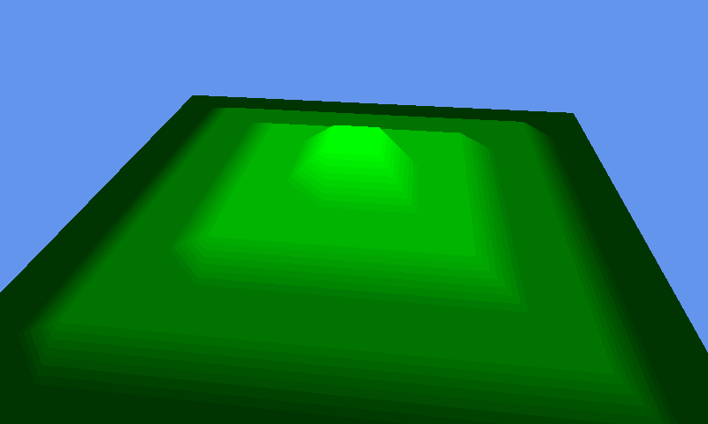

Learning 3D Graphics
April 28, 2025
I guess it's been a couple months since I last made a post, but I wanted to share what I've been excited about working on recently.
One thing I've always been very interested in was computer graphics. It's always seemed like such a magical thing, to be able to instruct the GPU to draw three-dimensional images on the screen. It's something I've always wanted to play around with; I just never knew where to start.
Well, here we are.

This model was generated entirely from code, using this data file as a heightmap. I will admit that I did have some help, as I used the MonoGame framework to handle most of the direct OpenGL calls. You can see the drawing code for yourself here.
Side note: If you aren't familiar with MonoGame, from what I understand it's essentially an open-source, multi-platform wrapper for Microsoft's old XNA game development framework.
I know that for people familiar with 3D graphics that this probably doesn't seem too impressive, but this is pretty new to me and I'm still learning.
To further my learning, I eventually would like to delve even deeper into the layers of abstraction and work directly with something like OpenGL or DirectX. I recently acquired a copy of Real Time Rendering, Fourth Edition by Tomas Akenine-Moller, Eric Haines, and Naty Hoffman (that's not an affiliate link). I've only had the chance to read through the first chapter so far, but I find all of it so interesting.
Anyway, that's all I have for now. I hope you're having a good time with all of your learning endeavors!